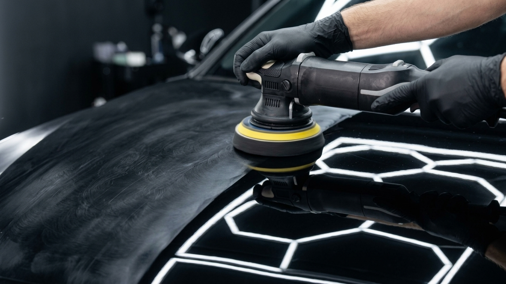

Accueil › Lustrage & polissage
Carrosserie · Orléans & agglomération
Lustrage & polissage de carrosserie
On efface les micro-rayures et les tourbillons, on rend à la peinture sa profondeur et sa brillance — sans jamais agresser le vernis.
À domicile ou en centre à Saran Sur rendez-vous Devis gratuit Correction machine, sans agresser le vernis
Ce que ça corrige
Redonner de l'éclat à un vernis fatigué
Avec le temps, les lavages et les frottements, la peinture se couvre de défauts fins : micro-rayures, tourbillons (les fameux « swirls » visibles au soleil), traces d'essuyage, début d'oxydation, aspect terne.
Le polissage retire une infime couche de vernis pour niveler ces défauts. Le lustrage affine ensuite le rendu pour une surface parfaitement lisse et brillante, sans hologrammes.
Résultat : une carrosserie qui réfléchit nettement, des couleurs plus profondes, et une peinture prête à recevoir une protection durable.

Un lavage ne fait pas un lustrage
Correction réelle
Le lavage nettoie la surface ; le polissage machine agit dans le vernis pour supprimer les défauts, pas les masquer.
Brillance uniforme
Travail panneau par panneau, contrôle à la lampe : un rendu homogène sur toute la voiture, sans zones ternes.
Sans agression
Produits et pads adaptés à chaque peinture, fonction vapeur / injection pour préparer sans rayer. On préserve l'épaisseur du vernis.

Pour que ça dure
Lustrage + protection céramique
Un lustrage remet la peinture à neuf ; une protection l'empêche de se re-marquer trop vite. C'est le moment idéal pour appliquer une protection céramique Gtechniq : la surface est nette, la céramique fige cet état et le protège des UV et des contaminants pendant des années.
Un devis lustrage pour votre voiture ?
On évalue l'état du vernis et on vous propose la prestation adaptée.
Aussi chez CKLEAN AUTO 45 : Protection céramique Nettoyage intérieur Zone d'intervention